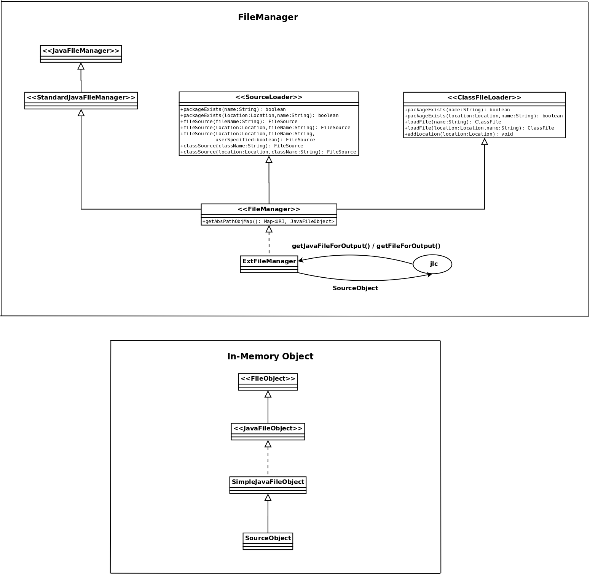

Design Changes
- SourceLoader is now an interface. Implementation of this
interface is now encapsulated in filemanager (ExtFileManager).
- ClassFileLoader is now an interface. Implementation of this
interface is now encapsulated in filemanager (ExtFileManager).
- ClassPathLoader has been deleted.
- ClassFile is an interface and ClassFile_c is an
implementation of that interface.
- Source and FileSource are now interfaces. Source_c implements
FileSource.
- Setting of post compiler classpath and full classpath has
been deleted.
Additions
- ExtensionInfo interface has an additional method
classFileLoader which creates a loader that loads .class files from
multiple locations.
- FileManager interface, extending StandardJavaFileManager,
SourceLoader and ClassFileLoader
- ExtFileManager class, implementing FileManager interface
- SourceObject class, extending SimpleJavaFileObject to provide
in-memory objects to hold translated Java code
- StringBuilderWriter class, providing a writer that writes to
a StringBuilder
NOTE: Locations in ExtFileManager are set in Main method by
calling addLocationsToFileManager method of ExtensionInfo interface.
FileManager implementation and associated SourceObject
